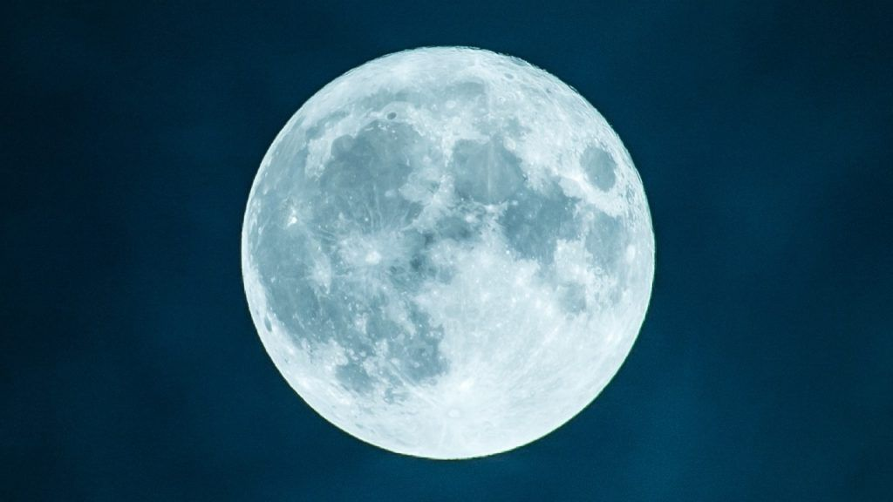

Informacion sobre los satelites
Un satélite natural es un cuerpo celeste que orbita alrededor de un planeta. Generalmente el satélite es más pequeño y acompaña al planeta en su órbita alrededor de su estrella madre. A diferencia de los fragmentos que orbitan formando un anillo, es el único cuerpo en su órbita. El término satélite natural se contrapone al de satélite artificial, siendo este último, un objeto que gira en torno a la Tierra, la Luna o algunos planetas y que ha sido fabricado por el hombre.
| Nombre | Planeta |
|---|---|
| Luna | Tierra |
| Deimos | Marte |
| Titan | Saturno |